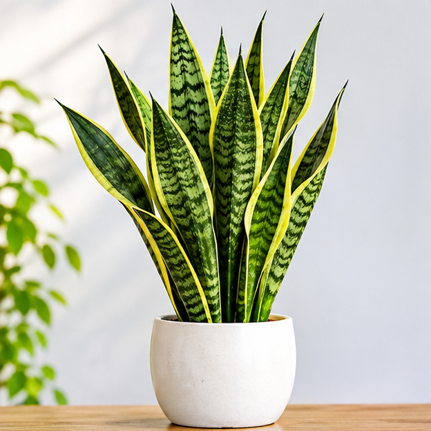
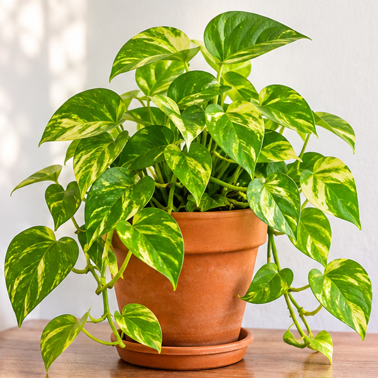
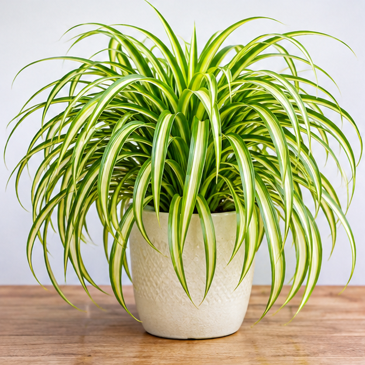

Snake plant
Snake plants have tall, upright leaves and a neat shape. They can tolerate periods of dry soil, so they are a good option if you sometimes forget to water.
Find your first leafy friend
Your friendly guide to happy indoor plants
Some plants are more forgiving than others. These popular choices are a useful starting point for people who are learning the basics.

Snake plants have tall, upright leaves and a neat shape. They can tolerate periods of dry soil, so they are a good option if you sometimes forget to water.

Pothos is known for its trailing stems and heart-shaped leaves. It looks lovely on a shelf where its leaves can hang down.

Spider plants have long, arching leaves and can produce small plantlets. Give yours bright, indirect light and let excess water drain away.
Remember: Every home is different. Light, temperature and pot drainage affect how a plant grows.